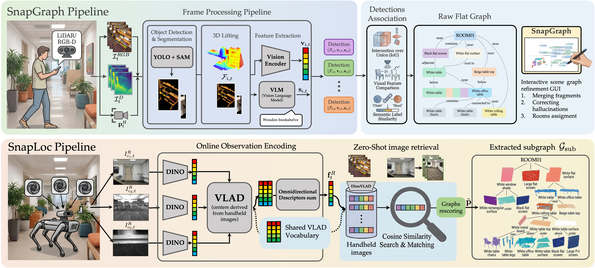

System Architecture¶

Spot Semantic Mapping transforms raw RGB-D sensor streams into a structured 3D scene graph through a multi-stage pipeline. This page explains the overall architecture and how data flows through the system.
High-Level Overview¶
flowchart TB
subgraph INPUT ["Input Sources"]
direction LR
S1["📱 iPhone\n(StrayScanner)"]
S2["🤖 Boston Dynamics Spot\n(6 cameras)"]
end
subgraph PERCEPTION ["Perception (per frame)"]
direction LR
DET["YOLO World\nOpen-set Detection"]
SEG["SAM 2.1\nInstance Segmentation"]
PROJ["3D Projection\n(via depth + pose)"]
DET --> SEG --> PROJ
end
subgraph MAPPING ["3D Mapping (across frames)"]
TRACK["ObjectTracker3D\nGeometric + Semantic Fusion"]
CAP["BLIP-2\nMulti-view Captioning"]
REL["VLM Voting\nSpatial Relations"]
TRACK --> CAP --> REL
end
subgraph OUTPUT ["Outputs"]
direction LR
JSON["scene_graph.json\n(nodes + edges + captions)"]
PLY["semantics.ply\n(coloured point cloud)"]
DB["VPR Database\n(DINOv2 + VLAD)"]
end
subgraph LOC ["Localization"]
QUERY["Query Image"]
ENC["DINOv2 Encoder\n+ VLAD Aggregation"]
RET["Cosine Retrieval\nTop-k frames + subgraphs"]
QUERY --> ENC --> RET
end
INPUT --> PERCEPTION --> MAPPING --> OUTPUT
OUTPUT --> LOC
DB --> RET
Stage 1 — Data Loading¶
The core/io.py module normalises inputs from both sensor types into a common format:
| Field | Shape | Description |
|---|---|---|
rgb_frame |
(H, W, 3) uint8 |
BGR image |
depth_frame |
(H, W) float32 |
Depth in metres |
confidence_map |
(H, W) uint8 |
Depth reliability (0–2) |
camera_intrinsics |
(3, 3) |
Focal length + principal point |
pose_T_world_cam |
(4, 4) |
Camera-to-world SE(3) transform |
Stage 2 — Per-Frame Perception¶

YOLO Detection¶
YOLO World takes the RGB frame and a list of text class prompts, returning bounding boxes with confidence scores. The class list is fully configurable via main_config.yml.
detections = yolo_model.detect(rgb_frame, classes=["chair", "table", ...])
# Returns: [(bbox_xyxy, confidence, class_name), ...]
SAM Segmentation¶
Each bounding box from YOLO is passed as a prompt to SAM 2.1, which returns a precise per-pixel binary mask. This avoids background pixels entering the object's point cloud.
3D Projection¶
For each masked detection, valid depth pixels within the mask are back-projected into 3D using the camera intrinsics, then transformed to world coordinates using the camera pose. This yields a small point cloud per detected object.
Stage 3 — Multi-Frame Fusion (ObjectTracker3D)¶
The tracker maintains a set of MapObjects — persistent 3D representations of observed objects. For every new detection arriving from a frame, it must decide:
- Does this detection match an existing tracked object? → association
- If yes, merge point clouds and update embeddings → update
- If no, create a new MapObject → initialisation
Association Score¶
score(new_det, existing_obj) =
w_geo × IoU(pcd_new, pcd_existing) # 3D point cloud overlap
+ w_sem × cosine(emb_new, emb_existing) # CLIP visual similarity
Matches above match_threshold are associated. Matches above merge_threshold trigger a loop closure merge via Union-Find.
Stage 4 — Captioning¶
Once tracking is complete, each MapObject's multi-view crops (all RGB crops from frames where the object was detected) are horizontally concatenated and passed to BLIP-2:
This produces a natural-language description for every object node in the graph.
Stage 5 — Spatial Relation Extraction¶
A KNN graph is built over the 3D object centroids. For each candidate pair of nearby objects, a VLM (Groq or OpenAI) is prompted with the objects' captions and spatial positions to vote on the relation type:
| Relation | Example |
|---|---|
left_of |
monitor is left_of keyboard |
on_top_of |
mug is on_top_of desk |
near |
chair is near table |
in_front_of |
robot is in_front_of door |
Relations confirmed by relation_votes or more VLM votes are added as directed edges.
Stage 6 — Localization (VPR)¶
Visual Place Recognition localises a new query image within the built scene graph.
flowchart LR
Q["Query image"] --> E1["DINOv2 encoder\n(patch features)"]
E1 --> V1["VLAD aggregation\n(global descriptor)"]
DB["Training frames\n(precomputed VLAD descriptors)"] --> IDX["FAISS index"]
V1 --> IDX
IDX --> R["Top-k frame IDs"]
R --> SG["Retrieve subgraph\n(objects near top-k frames)"]
style Q fill:#6750a4,color:#fff,stroke:none
style SG fill:#6750a4,color:#fff,stroke:noneThe retrieved subgraph contains the objects most likely to be visible from the query viewpoint.
Module Map¶
spot_semantic_mapping/
│
├── configs/ Configuration YAML + loader singleton
├── core/ Geometry, I/O, masks, metrics, TSDF, visualisation
├── models/ Model wrappers (YOLO, SAM, DINOv2, SigLIP, BLIP-2, LLMs)
├── mapping/ Pipeline orchestration, tracker, relations, occupancy
├── localization/ VPR encoder, localizer, dataset builder, evaluation
└── spot/ Spot robot SDK interface, telemetry, dataset loading
Data Flow Summary¶
| Stage | Input | Output | Key module |
|---|---|---|---|
| Loading | Raw files on disk | Normalised RGB-D frames | core/io.py |
| Detection | RGB frame | Bounding boxes | models/detection.py |
| Segmentation | RGB + bbox | Binary masks | models/segmentation.py |
| Projection | Depth + mask + pose | Object point cloud | core/geometry.py |
| Tracking | All frame detections | MapObject list | mapping/tracker.py |
| Captioning | Multi-view crops | Text captions | models/captioning.py |
| Relations | Object centroids + captions | Directed edges | mapping/relations.py |
| Export | MapObject list | JSON + PLY | mapping/pipeline.py |
| VPR encoding | RGB frames | VLAD descriptors | localization/encoder.py |
| Retrieval | Query descriptor | Frame IDs + subgraph | localization/localizer.py |